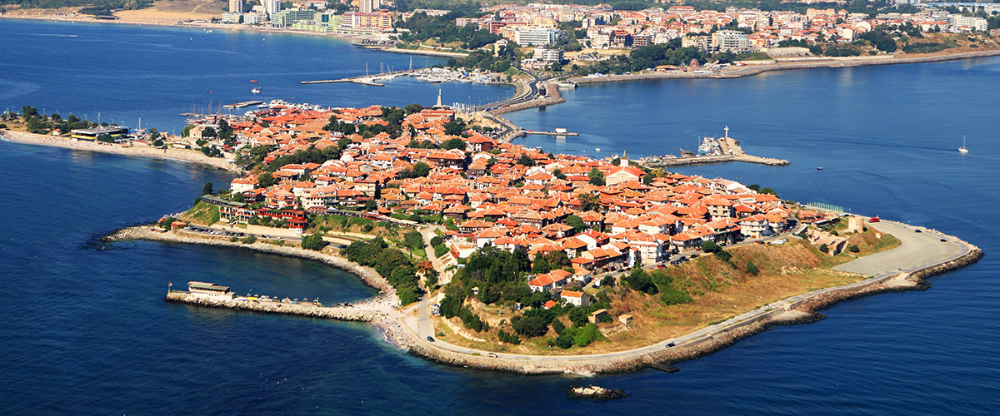
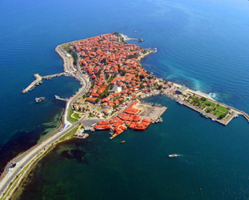
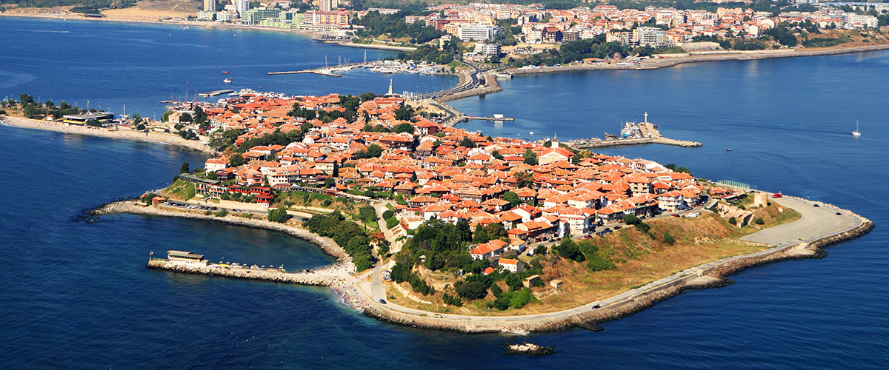
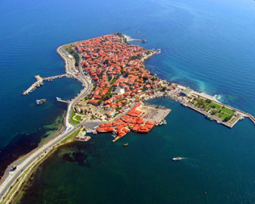

Nesebar je grad u jugoistočnoj Bugarskoj, nalazi se u Burgaskoj regiji a severni sused, sa kojim je praktično spojen, je Sunčev breg, najveće i najpoznatije letovalište na Bugarskom primorju. Nesebar prethodno je bio poznat kao Mesembrija a još pre toga kao Menebrija, prema tome ove činjenice dovoljne su nam da spoznamo koliko je duga istorija ovog drevnog gradića. U savremeno doba Nesebar je glavno turističko odredište u području s brojnim hotelima i velikim „Sunčaevim bregom“ koje se nalazi odmah severno od Nesebara. Nesebar je u nekoliko prilika bio granica ugrožene imperije i zbog toga je grad s bogatom istorijom. Stari deo grada nalazi se na ostrvu koje je u novije vreme povezanom s obalom zemljouzom izgrađenim ljudskom rukom, i u njemu se nalaze dokazi osvajanja različitih civilizacija. Bogatstvo istorijskih građevina su bili razlog da UNESKO uključi Nesebar na spisak Svetske baštine 1983. godine.
Istorija: Prvobitno tračko naselje poznato kao grad Menebrija postalo je grčka kolonija početkom 6. veka p. n. e., koja je postala važan trgovački centar. Ipak neki tragovi svedoče da su prve naseobine na ovom području iz perioda kasnog bronzanog doba. Ostaci iz helenističkoh perioda, uključuju akropolj, Apolonov hram i agoru. Zid koji je činio deo grčke fortifikacije još se mogu videti na severnom delu poluostrva. Grad je pao pod rimsku vlast 71. godine p. n. e., ali je nastavio da uživa privilegije kao što je pravo da kuje svoj vlastiti novac. Potom je bio jedno od važnih uporišta Vizantijskog carstva od 5. veka nadalje, oko koga su se borile Vizantija i Bugarska. Godine 812. osvojio ga je Kan Krum posle dvonedeljne opsade. Najvažniji spomenici iz srednjeg veka su Stara Mitropolija iz 9. veka, bazilika bez transepta; crkva svete Device Marije iz 10. veka i Nova Mitropolija iz 11. veka, koja je dograđena i ulepšana u 18. veku. U 13. veku i 14. veku izgrađen je značajan broj crkava: svete Teodore, svete Paraskeve, Svetog Mihaila i Gavrila i Svetog Jovana Aliturgetosa. Otomansko osvajanje grada, 1453, označilo je početak opadanja, ali je ostalo njegovo arhitektonsko nasleđe, koje je od 19. veka obogaćeno izgradnjom drvenih kuća u „istočnorumelijskom grčkom stilu“, tipičnom za bugarsku crnomorsku obalu toga perioda.

 




Hoteli:
- Cabana beach club complex
- The mill hotel
- Zevs residence
- Sunčev breg-hotel Kotva
- Nesebar royal palace
- Family hotel St.Stefan
- Elizabeth dy boutique hotel